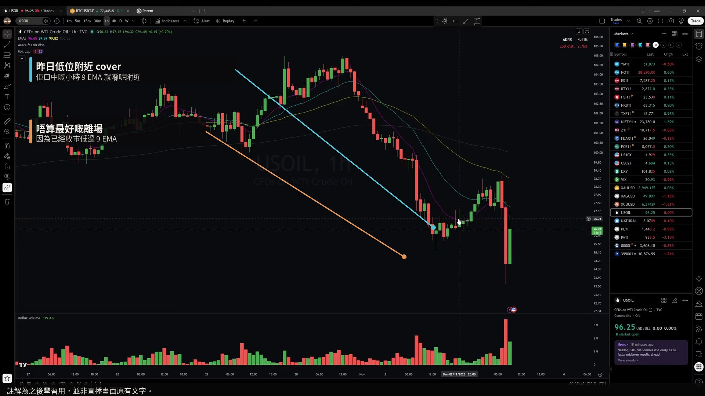

概要
喺昨日低位同小時 9 EMA 附近 cover
13:50 開始講油，但嗰一秒畫面仲係 QQQ 日線；到 13:54 先切到 USOIL 1 小時。佢話喺昨日低位附近 cover，位置係小時 9 EMA；同時承認呢個唔算最好嘅離場，因為已經收市低過 9 EMA。本頁用 13:58 嘅 1 小時圖，唔寫死成交價。
圖一 · 主圖
USOIL 1 小時：口中嘅 9 EMA 同昨日低位附近
直播 13:58

原話
And oil, I covered it near the lows of yesterday, like at the hourly 9 EMA. Not really the best exit, but I guess it's just close below the 9 EMA.
原油呢邊，我喺昨日低位附近 cover，即係小時 9 EMA。唔算係最好嘅離場，不過大概就係收市低過 9 EMA。
點樣讀
1 小時圖見到價格靠近近日低位同均線一帶。佢把離場位置講成「昨日低位」同「小時 9 EMA」。
重點係佢自己已經話唔算最好離場：理由係收市已經低過 9 EMA。圖例冇印 9 呢個周期，本頁只標口中位置就喺呢附近，亦唔寫死成交價。
附註
注意事項
- 13:50 開始講油時畫面仲係 QQQ；有分析意思嘅圖係之後嘅 USOIL 1 小時。14:03 之後仲切過 4 小時同日線，但對白講嘅係 hourly 9 EMA。
- 圖例多數只有顏色同數值，冇印均線周期。本頁唔會把某條彩線寫死成 9 EMA。
- 畫面睇唔到成交價、倉位大細或者損益，所以唔寫死呢啲數字。